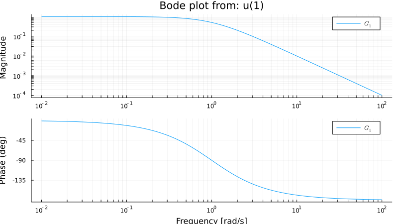

Introduction
Installation
To install this package simply run
using Pkg; Pkg.add("ControlSystems")Basic functions
Transfer functions can easily be created using the function tf(num, den, Ts=0), where num and den are vectors representing the numerator and denominator of a rational function. See tf or the section "Creating Transfer Functions" for more info. These functions can then be connected and modified using the operators +,-,*,/ and functions like append.
Example:
P = tf([1.0],[1,1])
T = P/(1+P)
# output
TransferFunction{Continuous,ControlSystems.SisoRational{Float64}}
1.0s + 1.0
-------------------
1.0s^2 + 3.0s + 2.0
Continuous-time transfer function modelNotice that the poles are not canceled automatically, to do this, the function minreal is available
minreal(T)
# output
TransferFunction{Continuous,ControlSystems.SisoRational{Float64}}
1.0
----------
1.0s + 2.0
Continuous-time transfer function modelPlotting
Plotting requires some extra care. The ControlSystems package is using Plots.jl (link) as interface to generate all the plots. This means that the user is able to freely choose back-end. The plots in this manual are generated using PyPlot. If you have several back-ends for plotting then you can select the one you want to use with the corresponding Plots call (for PyPlot this is Plots.pyplot(), some alternatives are gr(), plotly(), pgfplots()). A simple example where we generate a plot and save it to a file is
fig = bodeplot(tf(1,[1,2,1]))
Plots.savefig(fig, "myfile.svg")